RLadiesMX2020
Primer Encuentro Anual R-Ladies México
2020-09-28 14:26:19
Parameters
| Parameter | Value |
|---|---|
| hashtag | #RLadiesMX |
| start_day | 2020-09-24 |
| end_day | 2020-09-24 |
| timezone | America/New_York |
| theme | theme_light |
| accent | #88398a |
| accent2 | #a7a9ac |
| kcore | 2 |
| topics_k | 6 |
| bigram_filter | 3 |
| fixed | FALSE |
| seed | 1 |
1 Introduction
An analysis of tweets from the #RLadiesMX hashtag for the RLadiesMX 2020 online event, September 24, 2020.
Este es un análsis de los tweets de la etiqueta #RLadiesMX para el evento RLadiesMX 2020, del 24 de septiembre del 2020 que se llevó acabo en lÃnea.
2 Timeline
2.1 Tweets by day
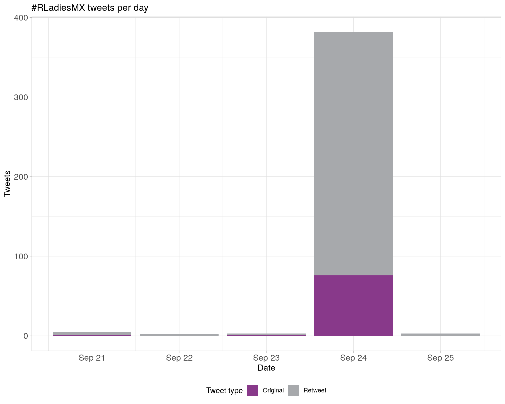
2.2 Tweets by day and time
Filtered for dates 2020-09-24 - 2020-09-24 in the America/New_York timezone.
3 Users
3.1 Top tweeters
Overall
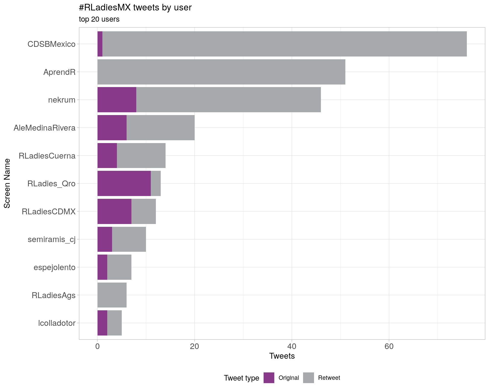
Original
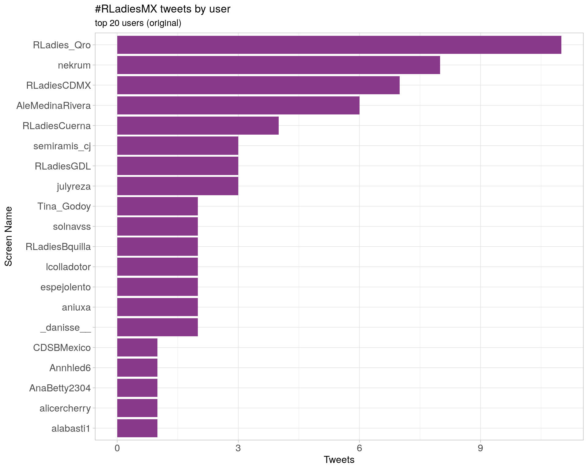
Retweets
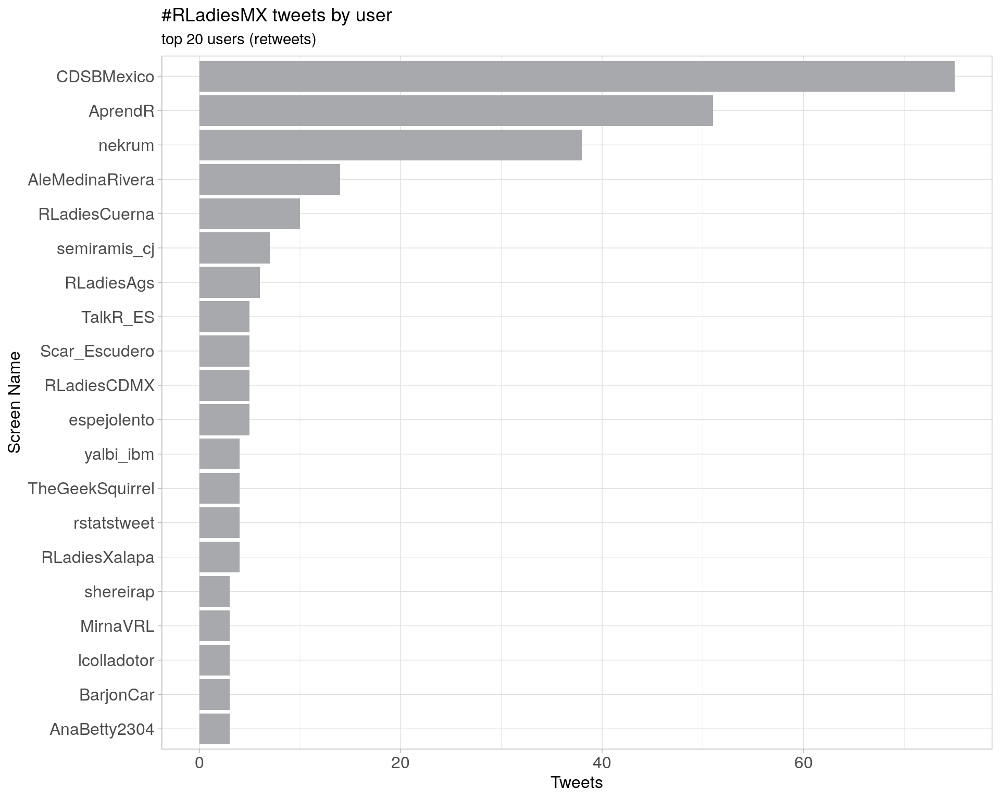
3.2 Retweet proportion
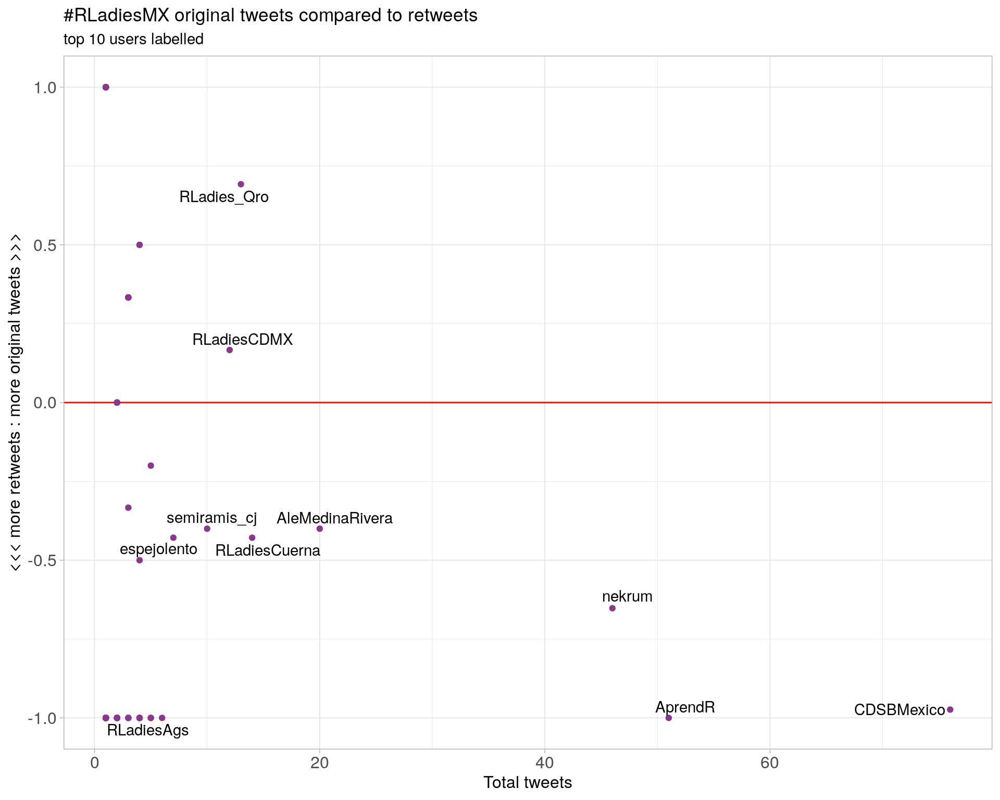
3.3 Top tweeters timeline

3.4 Top tweeters by day
Overall
Day 1
Original
Day 1
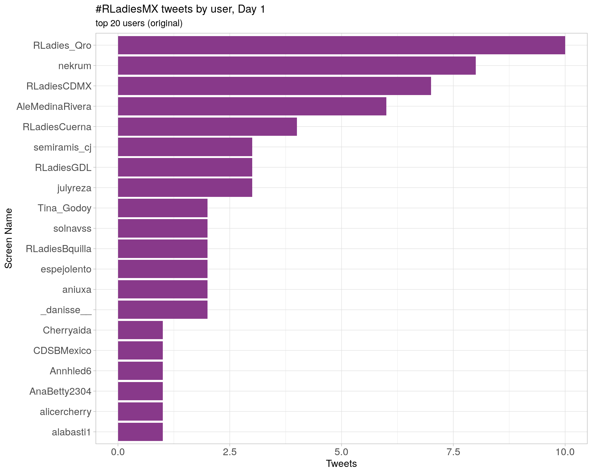
Retweets
Day 1
4 Sources
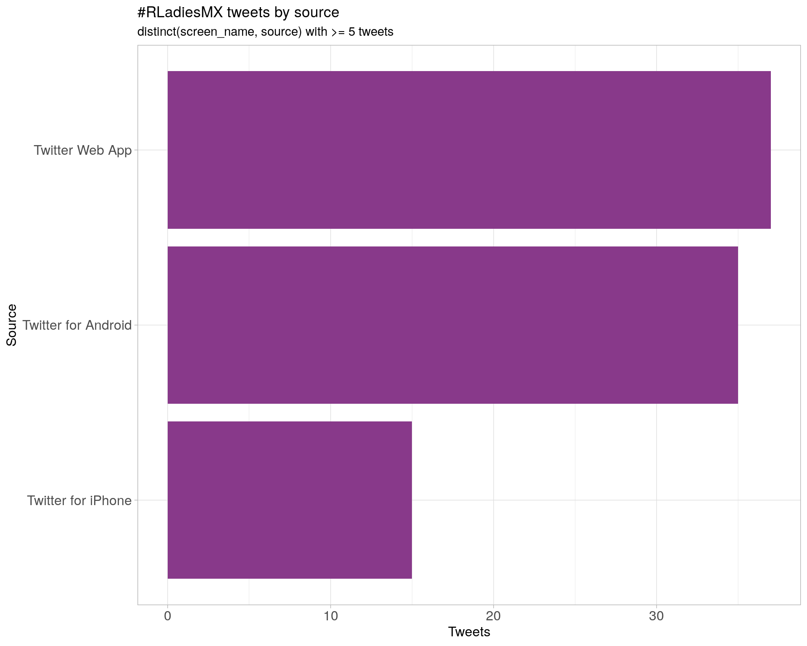
5 Networks
5.1 Replies
The “replies networkâ€, composed from users who reply directly to one another, coloured by PageRank.

5.2 Mentions
The “mentions networkâ€, where users mention other users in their tweets. Filtered for a k-core of 2. Node colour and size adjusted according to PageRank score.
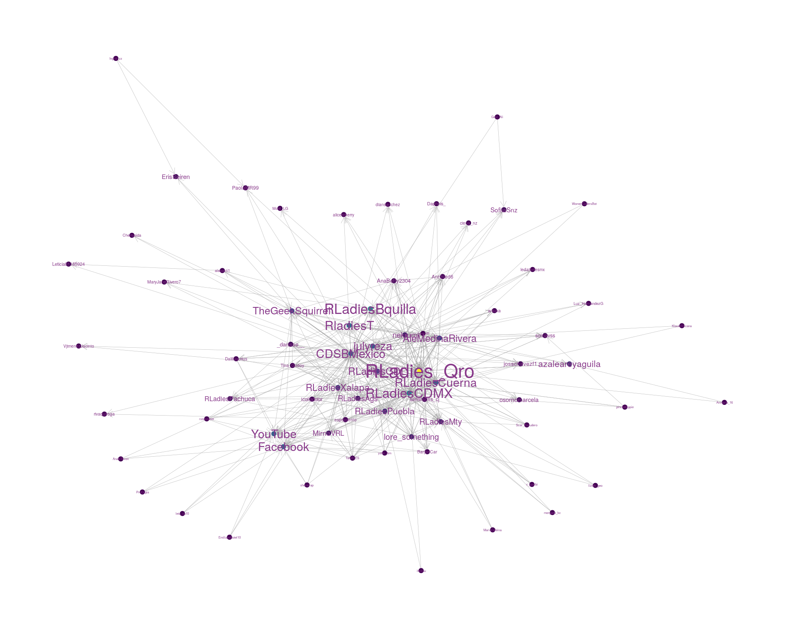
6 Tweet types
6.1 Retweets
Proportion
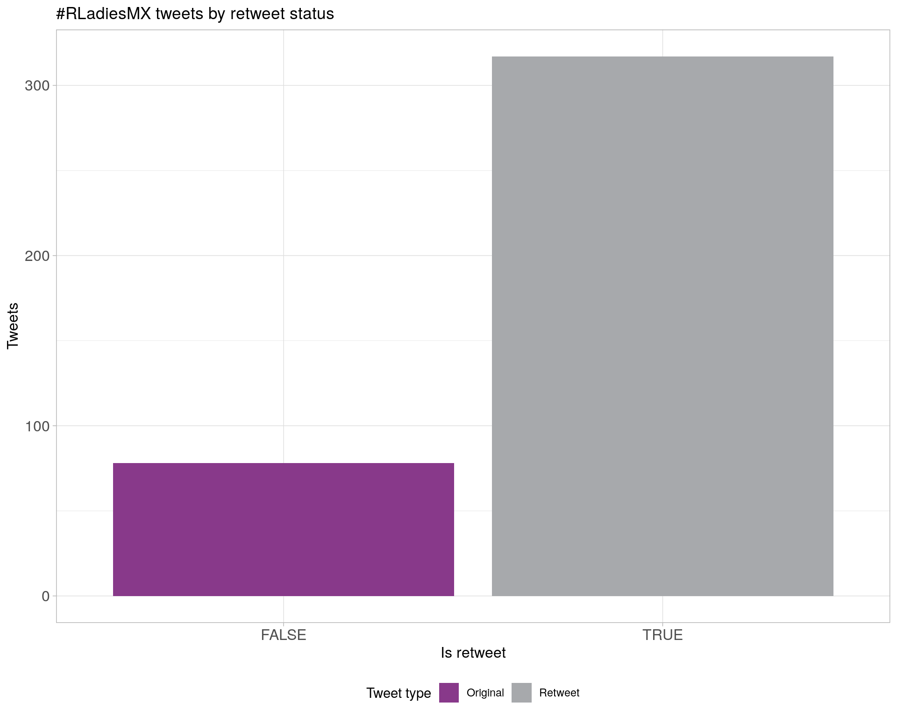
Count
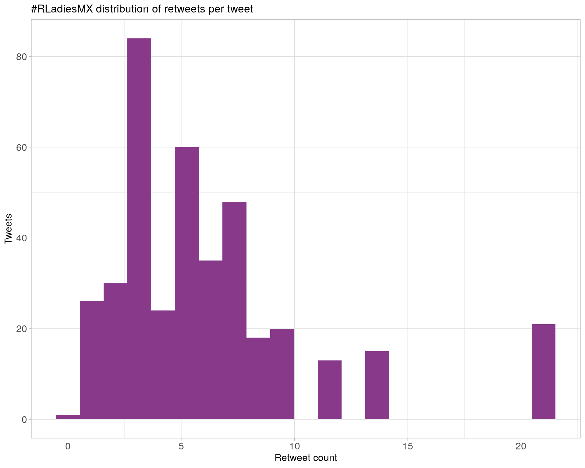
Top 10
| screen_name | text | retweet_count |
|---|---|---|
| CDSBMexico |
👀 Primer Encuentro #RLadiesMX live @YouTube https://t.co/nc8h1js8VN @Facebook https://t.co/d0hj5JsihQ @RLadiesCDMX @RLadiesXalapa @RLadies_Qro @RLadiesPuebla @RLadiesCuerna @RLadiesMty @RLadiesAgs @RLadiesGDL @RLadiesPachuca @RLadiesT #rstatsES #rstats https://t.co/FH0JggkPJX |
21 |
| RLadiesBquilla |
#RLadiesMX En estos momentos, Aurora Labastida nos comenta cómo R se ha relacionado con varios aspectos de su vida y lo que ha recibido de la comunidad. #WomenWhoCode #womenempoweringwomen #rladies #RStats #GirlsWhoCode #DataScience https://t.co/Jk6lvwPDs5 |
15 |
| RLadies_Qro | ¡Que bonita comunidad! 🥰¡Gracias por acompañarnos! 💜#RLadiesMx https://t.co/qLZH4kTutu | 14 |
| RLadiesCDMX | Bien bonito escuchar la historias de otras #RLadiesMX, @RLadiesMty nos cuenta de cómo crecieron de la mano de @RLadies_Qro y los capÃtulos más nuevos, @RLadiesAgs + @RLadiesGDL, resaltan la importancia de apoyarnos entre todas 💪💜 Acá les pasamos sus datos: https://t.co/KatWsAmL4v | 9 |
| RLadiesCDMX | .@RLadiesPuebla está buscando organizadoras, si tienen amigas allá que quieran entrarle a este trabajo tan bonito corran la voz ¡Van los datos en la imagen! #RLadiesMX https://t.co/EVT1ILauxB | 9 |
| RLadies_Qro | Eres mujer o te identificas con el género femenino y ¿Sabes usar R? ¿Quieres compartir tus conocimientos con nosotras? ¡EscrÃbenos! qro@rladies.org #RLadiesMx | 9 |
| RLadies_Qro | Pláticas cortas en #RLadiesMx, ahora con @julyreza de @RLadies_Qro bases de datos y gráficos de expresiones de genes https://t.co/Ys56jyok87 | 9 |
| RLadiesBquilla | ¡Estamos en vivo! Este es el 1er encuentro anual de #RLadiesMX 💜 Un espacio propicio para conocer otros capÃtulos e inspirarse de todos ellos. Por acá la transmisión en vivo: https://t.co/XdlqTPbf3x https://t.co/Aw0adnGkxT | 9 |
| lcolladotor |
Fue un gusto presenciar #RLadiesMX ^^ ¡Felicidades! 🇲🇽🤩💪ğŸ¾ğŸ’œğŸ’œğŸ’œ @RLadiesCDMX @RLadiesXalapa @RLadies_Qro @RLadiesPuebla @RLadiesCuerna @RLadiesMty @RLadiesAgs @RLadiesGDL @RLadiesPachuca @RLadiesT #rstatsES #rstats @CDSBMexico https://t.co/lIXFLlgdRf |
9 |
| RLadies_Qro |
Ya es esté Jueves!!! No olvides acompañarnos en nuestro primer evento de #RladiesMx 🚨🚨🚨 Si no alcanzaste lugar en nuestros meetups, puedes acompañarnos por #YouTubeLive el dÃa del evento! 😃🙌 https://t.co/BL2JrRZsV5 🌠https://t.co/8c0BvrXg9L https://t.co/Pe9kEqOQiD |
8 |
Most retweeted
6.2 Likes
Proportion
Count

Top 10
| screen_name | text | favorite_count |
|---|---|---|
| SofiiaSnz | Es emocionante ver a tantas mujeres trabajando en enseñar R totalmente inclusivo “si tienes una libreta, ¡está bien!†🥰. #Rladies #RladiesMX https://t.co/tizQMvUowr | 47 |
| RLadies_Qro | ¡Que bonita comunidad! 🥰¡Gracias por acompañarnos! 💜#RLadiesMx https://t.co/qLZH4kTutu | 42 |
| RLadies_Qro | Eres mujer o te identificas con el género femenino y ¿Sabes usar R? ¿Quieres compartir tus conocimientos con nosotras? ¡EscrÃbenos! qro@rladies.org #RLadiesMx | 29 |
| CDSBMexico |
👀 Primer Encuentro #RLadiesMX live @YouTube https://t.co/nc8h1js8VN @Facebook https://t.co/d0hj5JsihQ @RLadiesCDMX @RLadiesXalapa @RLadies_Qro @RLadiesPuebla @RLadiesCuerna @RLadiesMty @RLadiesAgs @RLadiesGDL @RLadiesPachuca @RLadiesT #rstatsES #rstats https://t.co/FH0JggkPJX |
28 |
| lcolladotor |
Fue un gusto presenciar #RLadiesMX ^^ ¡Felicidades! 🇲🇽🤩💪ğŸ¾ğŸ’œğŸ’œğŸ’œ @RLadiesCDMX @RLadiesXalapa @RLadies_Qro @RLadiesPuebla @RLadiesCuerna @RLadiesMty @RLadiesAgs @RLadiesGDL @RLadiesPachuca @RLadiesT #rstatsES #rstats @CDSBMexico https://t.co/lIXFLlgdRf |
28 |
| jmtoralc |
Yo, un vato cualquiera: jeje, iren, hice una red de la palabra “pedo†en varios libros de chistes jeje Cualquiera de las #RLadiesMx: Presenta una implementación de R para estudiar un fenómeno social urgente, pertinente y de manera rigurosa https://t.co/ppm1jOptUO |
27 |
| BarjonCar |
#Miprogramadorafavoritaes tantas mujeres increibles que voy a hacer un pequeño hilo 🧵 #RLadiesMX @TheGeekSquirrel |
26 |
| lcolladotor |
Relaxing now that #RLadiesMX is over :) Ahora si a descansar después de que terminó la transmisión en vivo de #RLadiesMX :) #rstats #rstatsES https://t.co/fb4JjaG1c6 |
25 |
| nekrum | Hablando de las Aplicaciones de R en MicrobiologÃa #RLadiesMx se puede ver en https://t.co/i5SG0h78Yh https://t.co/do7tz3pqbk | 24 |
| RLadiesXalapa |
Primer Encuentro Nacional de #RLadiesMX 🇲🇽 • Intercambiamos ideas sobre cómo hacer la comunidad de R más inclusiva para las mujeres, en el contexto de México. (🧵1/) https://t.co/xAgmYQXv60 |
24 |
Most likes
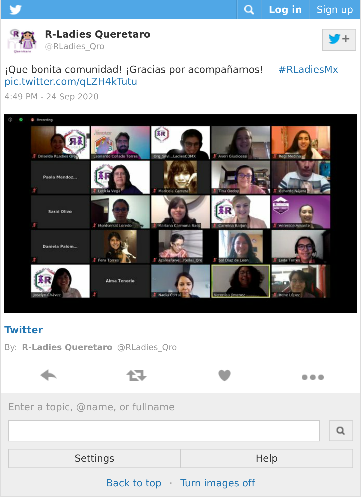
6.3 Quotes
Proportion
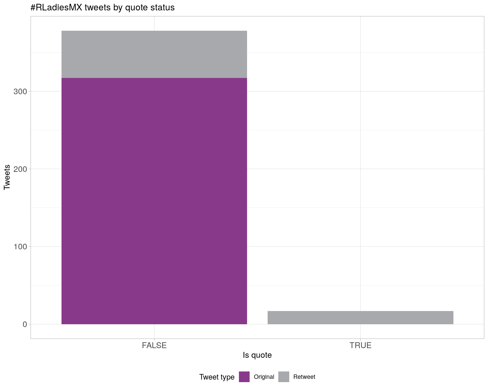
Count
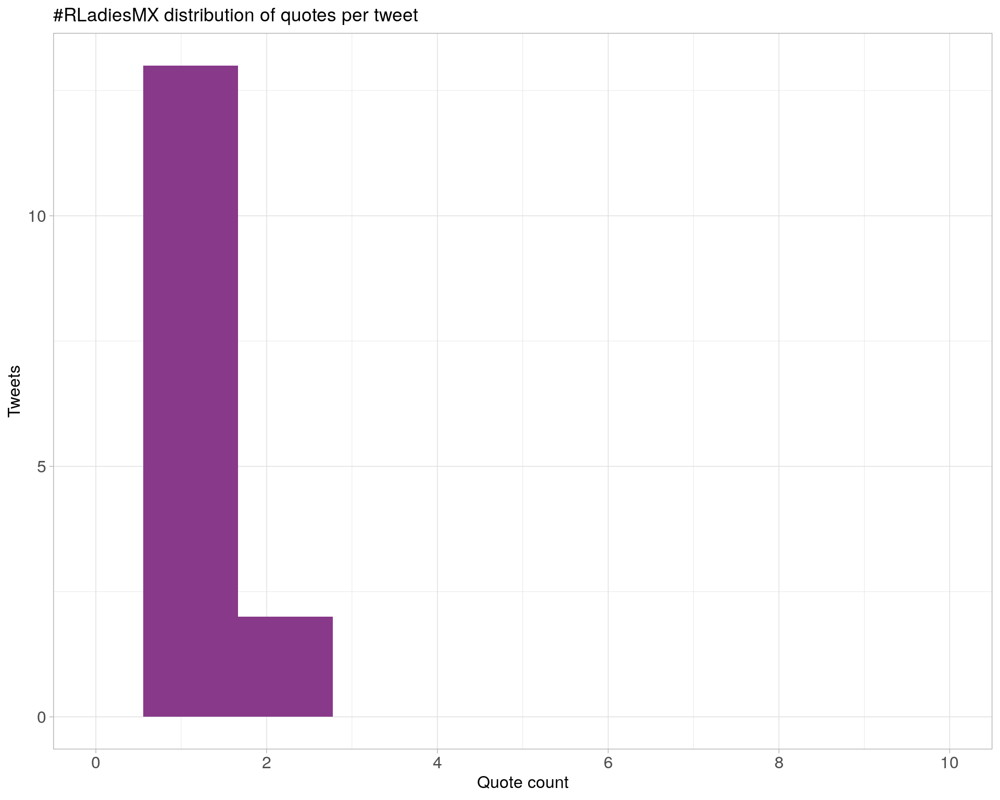
Top 10
| screen_name | text | quote_count |
|---|---|---|
| RLadiesGDL |
Acá se está escuchando y proponiendo ideas chidÃsimas para incluir y llevar la igualdad dentro de #RLadiesMX y en general en la comunidad usuaria dé software libres. 💜 https://t.co/9R2uuYAblU |
2 |
| semiramis_cj | #RLadiesMX https://t.co/HHGBbl1asT | 2 |
| RLadiesCDMX |
Seguimos con las pláticas cortas fascinadas de aprender de todas ustedes. Sigan #RLadiesMX #RLadiesMéxico Y las cuentas de @RLadiesXalapa @RLadies_Qro @RLadiesPuebla @RLadiesCuerna @RLadiesMty @RLadiesAgs @RLadiesGDL @RLadiesPachuca @RLadiesT #rstatsES #rstats https://t.co/O2jEz7t2zF |
2 |
| RLadiesCuerna | Las pláticas cortas del Primer Encuentro de #RLadiesMx están con todo, aquà una muestra de ello 💜💜💜 https://t.co/g6fZoQjXqZ | 2 |
| RLadies_Qro |
Ya es esté Jueves!!! No olvides acompañarnos en nuestro primer evento de #RladiesMx 🚨🚨🚨 Si no alcanzaste lugar en nuestros meetups, puedes acompañarnos por #YouTubeLive el dÃa del evento! 😃🙌 https://t.co/BL2JrRZsV5 🌠https://t.co/8c0BvrXg9L https://t.co/Pe9kEqOQiD |
1 |
| lcolladotor |
Nos vemos mañana @RLadiesCDMX @RLadiesXalapa @RLadies_Qro @RLadiesPuebla @RLadiesCuerna @RLadiesMty @RLadiesAgs @RLadiesGDL @RLadiesPachuca @RLadiesT y más 🙌🽠Les debo para la próxima las stickers de @CDSBMexico @RLadiesBmore 😔 #Rladies_Mexico #RLadiesMX #rstats #rstatsES https://t.co/pCDF6D7FNK |
1 |
| AleMedinaRivera | #RladiesMX en vivo!!! https://t.co/HeMcRq2HFt https://t.co/qPzhsTF5tc | 1 |
| Daphnis_ | #RLadiesMx Primer encuentro anual. https://t.co/iEVtFm7VN5 | 1 |
| RLadiesAgs | Si te perdiste el Primer Encuentro Anual de #RLadiesMX, aquà encontrarás la liga en para ver la transmisión, asà como nuestro pequeño resumen de los distintos momentos del encuentro. Encontrarás bioinformática, estadÃstica bayesiana, tips, feminismo y más. 🤗💜 https://t.co/euioIGnQQz | 1 |
| RLadiesCDMX | Bien emocionadas de participar en #RLadiesMX ¡y darnos cuenta, como dice @josschavezf1 que ya somos 10 capÃtulos en todo el paÃs! https://t.co/VHj6Y8jTg2 | 1 |
Most quoted
7 Media
Proportion
Top 10
| screen_name | text | favorite_count |
|---|---|---|
| SofiiaSnz | Es emocionante ver a tantas mujeres trabajando en enseñar R totalmente inclusivo “si tienes una libreta, ¡está bien!†🥰. #Rladies #RladiesMX https://t.co/tizQMvUowr | 47 |
| RLadies_Qro | ¡Que bonita comunidad! 🥰¡Gracias por acompañarnos! 💜#RLadiesMx https://t.co/qLZH4kTutu | 42 |
| CDSBMexico |
👀 Primer Encuentro #RLadiesMX live @YouTube https://t.co/nc8h1js8VN @Facebook https://t.co/d0hj5JsihQ @RLadiesCDMX @RLadiesXalapa @RLadies_Qro @RLadiesPuebla @RLadiesCuerna @RLadiesMty @RLadiesAgs @RLadiesGDL @RLadiesPachuca @RLadiesT #rstatsES #rstats https://t.co/FH0JggkPJX |
28 |
| lcolladotor |
Fue un gusto presenciar #RLadiesMX ^^ ¡Felicidades! 🇲🇽🤩💪ğŸ¾ğŸ’œğŸ’œğŸ’œ @RLadiesCDMX @RLadiesXalapa @RLadies_Qro @RLadiesPuebla @RLadiesCuerna @RLadiesMty @RLadiesAgs @RLadiesGDL @RLadiesPachuca @RLadiesT #rstatsES #rstats @CDSBMexico https://t.co/lIXFLlgdRf |
28 |
| lcolladotor |
Relaxing now that #RLadiesMX is over :) Ahora si a descansar después de que terminó la transmisión en vivo de #RLadiesMX :) #rstats #rstatsES https://t.co/fb4JjaG1c6 |
25 |
| nekrum | Hablando de las Aplicaciones de R en MicrobiologÃa #RLadiesMx se puede ver en https://t.co/i5SG0h78Yh https://t.co/do7tz3pqbk | 24 |
| RLadiesXalapa |
Primer Encuentro Nacional de #RLadiesMX 🇲🇽 • Intercambiamos ideas sobre cómo hacer la comunidad de R más inclusiva para las mujeres, en el contexto de México. (🧵1/) https://t.co/xAgmYQXv60 |
24 |
| RLadiesGDL |
Después del primer encuentro anual, les reiteramos la invitación para unirse a los capÃtulos de #RLadiesMX y esperamos la apertura de nuevos capÃtulos. 💜 https://t.co/cJIhKrasSx |
24 |
| RLadiesBquilla | ¡Estamos en vivo! Este es el 1er encuentro anual de #RLadiesMX 💜 Un espacio propicio para conocer otros capÃtulos e inspirarse de todos ellos. Por acá la transmisión en vivo: https://t.co/XdlqTPbf3x https://t.co/Aw0adnGkxT | 23 |
| _danisse__ | #RLadiesMx ¡Súper contenta! MuchÃsimas gracias a todos los capÃtulos que organizaron tan maravilloso espacio, ya estoy esperando el próximo. 💜✨ @RLadies_Qro @RLadiesXalapa @RLadiesGye @RladiesT @RLadiesPuebla @RLadiesCDMX @RLadiesMty @RLadiesCuerna @RLadiesAgs @RLadiesPachuca https://t.co/r4l65A4p7N | 20 |
7.1 Most liked image

8 Tweet text
8.1 Word cloud
The top 100 words used 3 or more times.
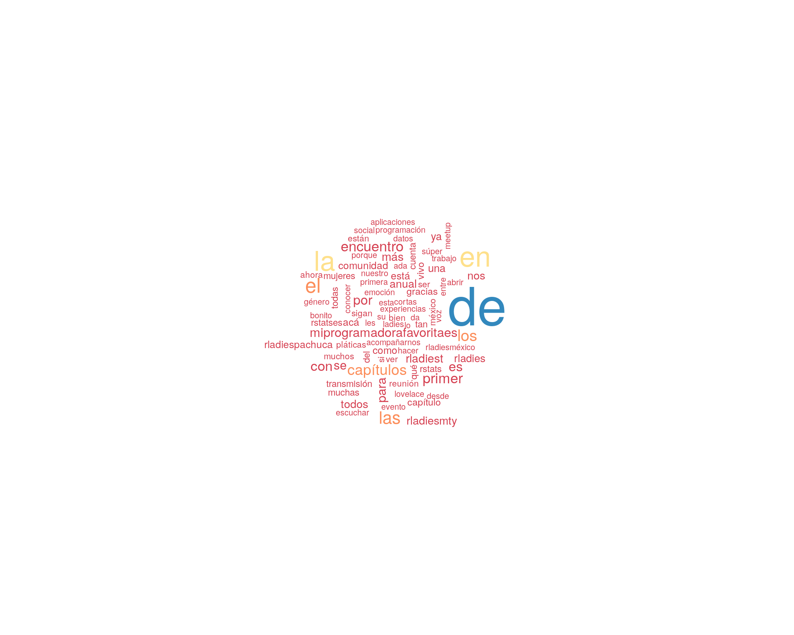
8.2 Bigram graph
Words that were tweeted next to each other at least 3 times.
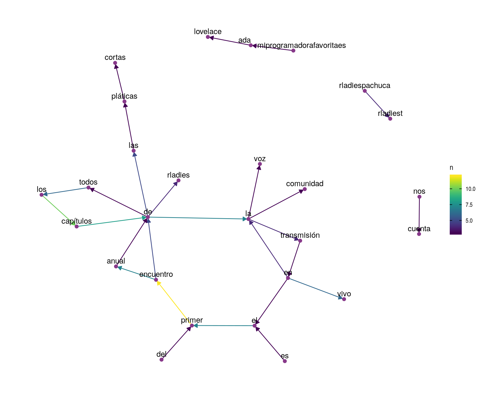
8.3 Topic modelling
Top 10 words associated with 6 topics identified by LDA.
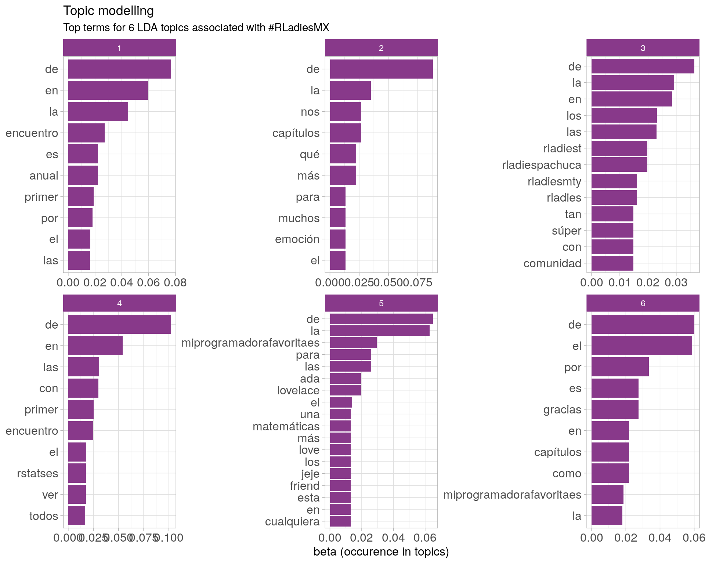
8.3.1 Representative tweets
Most representative tweets for each topic
Topic 1
| screen_name | text | gamma |
|---|---|---|
| RLadiesAgs | Si te perdiste el Primer Encuentro Anual de #RLadiesMX, aquà encontrarás la liga en para ver la transmisión, asà como nuestro pequeño resumen de los distintos momentos del encuentro. Encontrarás bioinformática, estadÃstica bayesiana, tips, feminismo y más. 🤗💜 https://t.co/euioIGnQQz | 0.9968851 |
| jmtoralc |
Yo, un vato cualquiera: jeje, iren, hice una red de la palabra “pedo†en varios libros de chistes jeje Cualquiera de las #RLadiesMx: Presenta una implementación de R para estudiar un fenómeno social urgente, pertinente y de manera rigurosa https://t.co/ppm1jOptUO |
0.9967964 |
| RLadies_Qro | Pásele a las preguntas a las #RLadiesMX moderada por @azaleareyaguila y poniendo sobre la mesa los retos de disminuir la brecha de género en los temas de programación https://t.co/5zZQSre1ib | 0.9953364 |
| Daliliuxurius | Ya está en vivo el Primer encuentro anual de #RLadiesMX!! Súper motivante escuchar las experiencias de la creación de los capÃtulos locales! @RLadiesCDMX https://t.co/RoxA6qW7uY | 0.9949150 |
| RLadiesGDL |
Después del primer encuentro anual, les reiteramos la invitación para unirse a los capÃtulos de #RLadiesMX y esperamos la apertura de nuevos capÃtulos. 💜 https://t.co/cJIhKrasSx |
0.9946744 |
| julyreza | SIgan la transmisión del primer encuentro de todos los capitulos de R-Ladies México #RLadiesMX https://t.co/MjpLxB466w | 0.9920370 |
| Luz_HernandezG | Aprendiendo de las buenazas en R en la Primera reunión anual de #RLadiesMX @RLadiesCDMX 🙌ğŸ¾ğŸ’» https://t.co/F3HEGNl5RP | 0.9907246 |
| julyreza | #Miprogramadorafavoritaes @AleMedinaRivera por iniciarme en el mundo de la programación! #RLadiesMx Muchas gracias @TheGeekSquirrel https://t.co/nkLSPyTWW3 | 0.9907246 |
| Tina_Godoy | Sigan el primer encuentro de #RLadiesMX estan en vivo por https://t.co/mDkk3q2K9d | 0.9888943 |
| RLadiesXalapa | • Platicamos sobre los retos que cada capÃtulo ha tenido. (🧵2/) #RLadiesMX https://t.co/B1LWrerQ6M | 0.9876785 |
Topic 2
| screen_name | text | gamma |
|---|---|---|
| RLadies_Qro | #RLadiesMX agradecemos su compañÃa en nuestra reunión. Les pedimos que las chicas que están interesadas en abrir el capÃtulo Edo de Meéxico nos contacten, pues apenas tenemos a tres chicas y eran más de cuatro las interesadas por favor RT hasta encontrar a todas | 0.9970485 |
| RLadies_Qro | #RLadiesMx ¿SabÃas que…? La creación de @RladiesT surgió motivada por la reunión que tuvimos con @RLadiesBquilla 💜Gracias chicas de Barranquilla por ayudar a Karen a abrir el capÃtulo en Tijuana, México 💜 | 0.9955219 |
| RLadiesXalapa | • Coincidimos en que la iniciativa de RLadies es una excelente opción para impulsar la participación de las mujeres en áreas STEM. ( 🧵3/) @RLadiesCDMX @RLadiesGDL @RLadies_Qro @RLadiesAgs @RLadiesCuerna @RLadiesMty @RladiesT @RLadiesPuebla #RLadiesMX https://t.co/MCGxcZsZFU | 0.9951348 |
| lore_something |
¡Véngance al 1er Encuentro Nacional de #RLadies México! ¡Está buenÃsimo! 💜👩ğŸ»â€ğŸ’»ğŸ“ˆğŸ“ŠğŸ“‰ @RLadiesCDMX @RLadiesCuerna @RLadiesXalapa @RLadies_Qro @RladiesT @RLadiesPuebla @RLadiesGDL @RLadiesAgs @RLadiesPachuca @RLadiesMty Y corre la voz entre tus contactos. #Rladies #RLadiesMX https://t.co/MMbTmMnq3y |
0.9946744 |
| RLadies_Qro | Eres mujer o te identificas con el género femenino y ¿Sabes usar R? ¿Quieres compartir tus conocimientos con nosotras? ¡EscrÃbenos! qro@rladies.org #RLadiesMx | 0.9941177 |
| alabasti1 | #Miprogramadorafavoritaes @Leticia81185924 y @VjimenezJacintopor que con ellas he aprendido muchas cosas durante muchos años. Son tan experimentadas y profesionales como alivianadas y divertidas. @TheGeekSquirrel #RLadiesMx | 0.9937934 |
| _danisse__ | #RLadiesMx y @TheGeekSquirrel #Miprogramadorafavoritaes @MaryJaneRivero7 porque además de compañera es amiga, siempre está aprendiendo, es apasionada, soñadora y me inspira a ser mejor. 💜✨ | 0.9930240 |
| CDSBMexico |
👀 Primer Encuentro #RLadiesMX live @YouTube https://t.co/nc8h1js8VN @Facebook https://t.co/d0hj5JsihQ @RLadiesCDMX @RLadiesXalapa @RLadies_Qro @RLadiesPuebla @RLadiesCuerna @RLadiesMty @RLadiesAgs @RLadiesGDL @RLadiesPachuca @RLadiesT #rstatsES #rstats https://t.co/FH0JggkPJX |
0.9920370 |
| Tina_Godoy | #Miprogramadorafavoritaes @VjimenezJacinto por qué me encanta la manera en que explica! #RLadiesMx @TheGeekSquirrel @RLadies_Qro @RLadiesCDMX @RLadiesCuerna @RLadiesXalapa @RLadiesGDL @RLadiesAgs @RladiesT @Rladies @RLadiesPuebla @RLadiesPachuca @RLadiesMty | 0.9914308 |
| RLadiesCuerna | Tenemos 140 participantes en nuestro evento #rladiesmx 🤩💜 sigue nuestra transmisión en YouTube y Facebook live!! | 0.9907246 |
Topic 3
| screen_name | text | gamma |
|---|---|---|
| marianeats | Ayer fue el primer encuentro anual de #RLadiesMx, me llena de emoción ver la comunidad tan bonita que se ha hecho y lo mucho que sigue creciendo! Me siento afortunada de formar parte de @RLadiesCDMX junto con dos grandes como @espejolento y mi sensei @TeresaOM 💜✨👩ğŸ»â€ğŸ’»ğŸŒ™ | 0.9968851 |
| RLadiesCDMX | Bien bonito escuchar la historias de otras #RLadiesMX, @RLadiesMty nos cuenta de cómo crecieron de la mano de @RLadies_Qro y los capÃtulos más nuevos, @RLadiesAgs + @RLadiesGDL, resaltan la importancia de apoyarnos entre todas 💪💜 Acá les pasamos sus datos: https://t.co/KatWsAmL4v | 0.9967026 |
| RLadiesBquilla |
#RLadiesMX En estos momentos, Aurora Labastida nos comenta cómo R se ha relacionado con varios aspectos de su vida y lo que ha recibido de la comunidad. #WomenWhoCode #womenempoweringwomen #rladies #RStats #GirlsWhoCode #DataScience https://t.co/Jk6lvwPDs5 |
0.9962649 |
| RLadies_Qro |
Tenemos ganadoras ğŸ†ğŸ† Para el #giveaway de ayer en #RladiesMX usando #Miprogramadrafavoritaes que fue patrocinado por @TheGeekSquirrel @EstefVazque ğŸ…@Tina_Godoy y ğŸ…@PaolaMR99 Felicidades! @BarjonCar nos muestra prueba de la legalidad 🙊 Y no dejen de checar sus productos! 🵠https://t.co/T1EOSxXIuL |
0.9958520 |
| Annhled6 | Escuchando el primer encuentro de #RLadiesMX . Apoyando desde lejos a mis compañeras de lab, pensando que cuando crezca quiero ser como ellas 🤩 Felicidades @julyreza @AnaBetty2304 que vengan muchos más éxitos para @RLadies_Qro https://t.co/34MOHfvjEa | 0.9956932 |
| nekrum | Faltan como 22 estados ojala y se animen más, para facilitarlo acá una conferencia sobre ¿Como abrir un capÃtulo? #RLadiesMx https://t.co/K30eSKwQOW | 0.9934312 |
| AleMedinaRivera | @Annhled6 @julyreza @AnaBetty2304 @RLadies_Qro Que bonito!!! Ya eres parte de #RLadiesMX 💜 y estás haciendo un súper trabajo en @RBioinformatica apoyando en los cursos https://t.co/G6154zU0wE | 0.9930240 |
| AleMedinaRivera |
@TheGeekSquirrel patrocinando #RLadiesMX #MiProgramadoraFavoritaEs 😱😱 Que pregunta tan difÃcil!!! Voy a decir que @mthomaschollier por que ella me enseñó a perder el miedo a programar 💜💜 @RLadies_Qro @RLadiesXalapa @RLadiesCDMX @RLadiesAgs @RladiesT @RLadiesPuebla |
0.9930240 |
| RLadies_Qro | Pláticas cortas en #RLadiesMx, ahora con @julyreza de @RLadies_Qro bases de datos y gráficos de expresiones de genes https://t.co/Ys56jyok87 | 0.9925631 |
| RLadies_Qro | #RLadiesMx desde Aguascalientes, Mariana nos cuenta la importancia de compartir conocimiento entre todas 💜 https://t.co/WXGbobzGjH | 0.9914308 |
Topic 4
| screen_name | text | gamma |
|---|---|---|
| RLadiesCDMX | Leticia Vega de @RLadiesCuerna nos cuenta que el Meetup más visitado fue el de #ggplot2 😮(y que #dataviz es el tema 🔥) y da un dato que es bien importante para quien quiera hacer un capÃtulo de #RLadiesMX: de las personas que se inscriben a Meetup, sólo llega hasta un 70% 😔 https://t.co/KwShP9MdNQ | 0.9970485 |
| espejolento | Ay. Escribà mal la cuenta. Sigan @TheGeekSquirrel para encontrar muchas tazas #geeks -> https://t.co/uEwZED8rFY El hashtag #MiProgramadoraFavoritaEs para conocer a más programadoras increÃbles 💜 Y esta lista con todos los capÃtulos de #RLadiesMX: https://t.co/zk6mISvDwB https://t.co/Egc49xhcOG https://t.co/rBPJzJhI24 | 0.9963849 |
| espejolento |
#MiProgramadoraFavoritaEs @rivaquiroga porque es generosa con lo que sabe y defiende un enfoque comunicativo en la enseñanza de la programación (vean: https://t.co/Xetx0nAs0h) Una dinámica de @TheGeekSquirre Y los capÃtulos de #RLadiesMX: https://t.co/zk6mISvDwB |
0.9958520 |
| Mont_LG | Conociendo todos los capÃtulos de #RLadiesMX, es muy emocionante ver a tantas mujeres que nos comparten su entusiasmo y experiencia en R, me encanta asistir a cada capÃtulo | 0.9946744 |
| RLadies_Qro | Orgullosas de @julyreza como miembro de nuestra comunidad en Qro, mostrandonos las aplicaciones de R en su campo de estudio #RLadiesMx https://t.co/e6JwOaN7k0 | 0.9941177 |
| RLadiesCDMX | Bien emocionadas de participar en #RLadiesMX ¡y darnos cuenta, como dice @josschavezf1 que ya somos 10 capÃtulos en todo el paÃs! https://t.co/VHj6Y8jTg2 | 0.9934312 |
| RLadiesCuerna | Todos los capÃtulos de #RLadiesMX se están presentando!!! Ven a conocer todos los capÃtulos de nuestro paÃs 👉 https://t.co/RlLMfjYi2s | 0.9930240 |
| solnavss | IncreÃble la comunidad tan grande que formamos los 10 capÃtulos de #RLadiesMX 🇲🇽👩ğŸ¾â€ğŸ’»ğŸ’œ Muchas felicidades @RLadiesCuerna y todas las demás. https://t.co/o9RC6dOaPo | 0.9925631 |
| AleMedinaRivera | Lo importante es empezar! Hay que dar el primer paso #RladiesMX https://t.co/SbqOeqfGo4 https://t.co/no3WgLiJN0 | 0.9898916 |
| nekrum | Bayes + R + Supercomputo para modelar aprendizaje de matemáticas 😠#RLadiesMx https://t.co/EqnlM8nNdz | 0.9861639 |
| BarjonCar |
#Miprogramadorafavoritaes tantas mujeres increibles que voy a hacer un pequeño hilo 🧵 #RLadiesMX @TheGeekSquirrel |
0.9861639 |
Topic 5
| screen_name | text | gamma |
|---|---|---|
| RLadies_Qro | #RLadiesMX ¿Excluye a los hombres? ¡No! Sólo le damos prioridad a la voz, el trabajo y el aprendizaje de las mujeres y de todos aquellos géneros que se identifiquen con el género femenino; todos son bienvenidos a escucharnos y aprender en las sesiones de RLadies | 0.9968851 |
| RLadiesCuerna | El panel de discusión de #RLadiesMX está buenÃsimo, hablando de inclusión tecnológica, de edad, social. Esto nos lleva a preguntarnos, qué nos falta hacer para ser una comunidad más diversa? Queremos escucharlas!! 💜 qué podemos hacer por ustedes? | 0.9967964 |
| SonGeo | Si no encontraron lugar en el primer encuentro RladiesMX acá esta el video: https://t.co/gQ70ZBOVbj 💙 Mi favorito fue el uso de survyr de @guzmart_ y R en la investigación social de Nancy #GirlsWhoCode #RLadiesMx #girlpower | 0.9961367 |
| diansanchez | Hoy es el Primer Encuentro Anual R-Ladies Mexico 🇲🇽. Hay muchos temas que reflexionar desde las experiencias de cada capÃtulo 😊. Pueden seguir la transmisión acá 🔛https://t.co/pMsnogmzfb #RLadiesMX https://t.co/O6QNyuMPYt | 0.9955219 |
| AleMedinaRivera | Quién se anima? #Puebla! Las están buscando No importa sin van empezando en R, solo importa que te guste R y quieras ser parte de una comunidad increÃble #RLadiesMX https://t.co/NjKSYuOLVn | 0.9953364 |
| RLadiesXalapa |
Primer Encuentro Nacional de #RLadiesMX 🇲🇽 • Intercambiamos ideas sobre cómo hacer la comunidad de R más inclusiva para las mujeres, en el contexto de México. (🧵1/) https://t.co/xAgmYQXv60 |
0.9951348 |
| RLadiesCDMX | .@RLadiesPuebla está buscando organizadoras, si tienen amigas allá que quieran entrarle a este trabajo tan bonito corran la voz ¡Van los datos en la imagen! #RLadiesMX https://t.co/EVT1ILauxB | 0.9951348 |
| AleMedinaRivera | Gracias @lcolladotor por ser un #aliado en este camino para dar voz a las mujeres y minorÃas #HeForShe #Rliado #rstats #RLadiesMX https://t.co/jBz4EDg2Nx | 0.9934312 |
| RLadiesXalapa | • Y tuvimos panelistas de lujo que nos explicaron ¿Cómo usan R en su trabajo?🤩 (🧵4/) @MirnaVRL @guzmart_ @jellowiss #RLadiesMX https://t.co/axgwuT4Bbr | 0.9920370 |
| dianolasa | Cáiganle están buenas las pláticas y experiencias #RLADIESMX YoutubeLive https://t.co/9O0SF8qw85 https://t.co/AM21w8xuw0 | 0.9876785 |
Topic 6
| screen_name | text | gamma |
|---|---|---|
| RLadiesCDMX |
¡Qué lindo hilo de @RLadiesXalapa tocando diferentes puntos que se trataron en nuestro primer encuentro nacional: #RLadiesMX! Si quieres conocer más de esta organización que promueve la div. de género en la comunidad de #Rstats, visita: https://t.co/ezm7AbiIl9 https://t.co/ytQiE5kjKP |
0.9967026 |
| ErisSeiren | #Miprogramadorafavoritaes Ada Lovelace debido a que representa los logros de todas las mujeres que se dedican a la tecnologÃa, la ciencia, la ingenierÃa o las matemáticas. Pone de manifiesto a esta pionera de la informática. #RLadiesMx @TheGeekSquirrel | 0.9961367 |
| RLadies_Qro |
Ya es esté Jueves!!! No olvides acompañarnos en nuestro primer evento de #RladiesMx 🚨🚨🚨 Si no alcanzaste lugar en nuestros meetups, puedes acompañarnos por #YouTubeLive el dÃa del evento! 😃🙌 https://t.co/BL2JrRZsV5 🌠https://t.co/8c0BvrXg9L https://t.co/Pe9kEqOQiD |
0.9959994 |
| RLadiesGDL |
Acá se está escuchando y proponiendo ideas chidÃsimas para incluir y llevar la igualdad dentro de #RLadiesMX y en general en la comunidad usuaria dé software libres. 💜 https://t.co/9R2uuYAblU |
0.9951348 |
| RLadiesCDMX | Nos encantó esta aportación de @osornomarcela de @RLadiesXalapa, vale mucho la pena aclarar detalles que haga que más mujeres se sientan incluidas/invitadas a participar #RLadiesMX #RLadiesMéxico https://t.co/Cs69nVUcOl | 0.9949150 |
| PaolaMR99 | #Miprogramadorafavoritaes Ada Lovelace porque fue la primera en reconocer que la máquina tenÃa aplicaciones más allá del cálculo puro y publicó el primer algoritmo. #RLadiesMx @TheGeekSquirrel | 0.9949150 |
| SofiiaSnz | Es emocionante ver a tantas mujeres trabajando en enseñar R totalmente inclusivo “si tienes una libreta, ¡está bien!†🥰. #Rladies #RladiesMX https://t.co/tizQMvUowr | 0.9937934 |
| AnaBetty2304 |
#Mifavoritefemaleprogramemer is @linawadi862! She was a close friend when I started to code at @TheBoutrosLab. Without her I wouldn’t love some much #R and computer science. Love you! BBT friend #Miprogramadorafavoritaes #RLadiesMX @TheGeekSquirrel @RLadies_Qro |
0.9920370 |
| nekrum | Hablando de las Aplicaciones de R en MicrobiologÃa #RLadiesMx se puede ver en https://t.co/i5SG0h78Yh https://t.co/do7tz3pqbk | 0.9914308 |
| nekrum | Expresión de genes con GGplot #RLadiesMx Acá se puede ver mas https://t.co/i5SG0h78Yh https://t.co/pfuGhAnVMu | 0.9907246 |
9 Software
Software mentioned in Tweets with links to GitHub, BitBucket, Bioconductor or CRAN.
Session info
## R version 4.0.0 (2020-04-24)
## Platform: x86_64-pc-linux-gnu (64-bit)
## Running under: Ubuntu 18.04.5 LTS
##
## Matrix products: default
## BLAS/LAPACK: /usr/lib/x86_64-linux-gnu/libopenblasp-r0.2.20.so
##
## locale:
## [1] LC_CTYPE=en_US.UTF-8 LC_NUMERIC=C
## [3] LC_TIME=en_US.UTF-8 LC_COLLATE=en_US.UTF-8
## [5] LC_MONETARY=en_US.UTF-8 LC_MESSAGES=C
## [7] LC_PAPER=en_US.UTF-8 LC_NAME=C
## [9] LC_ADDRESS=C LC_TELEPHONE=C
## [11] LC_MEASUREMENT=en_US.UTF-8 LC_IDENTIFICATION=C
##
## attached base packages:
## [1] stats graphics grDevices utils datasets methods base
##
## other attached packages:
## [1] fs_1.4.2 here_0.1 kableExtra_1.1.0
## [4] knitr_1.29 magick_2.4.0 webshot_0.5.2
## [7] viridis_0.5.1 viridisLite_0.3.0 wordcloud_2.6
## [10] RColorBrewer_1.1-2 ggraph_2.0.3 ggrepel_0.8.2
## [13] ggplot2_3.3.2 topicmodels_0.2-11 tidytext_0.2.5
## [16] igraph_1.2.5 stringr_1.4.0 purrr_0.3.4
## [19] forcats_0.5.0 lubridate_1.7.9 tidyr_1.1.0
## [22] dplyr_1.0.0 rtweet_0.7.0 BiocManager_1.30.10
##
## loaded via a namespace (and not attached):
## [1] progress_1.2.2 httr_1.4.2 rprojroot_1.3-2 SnowballC_0.7.0
## [5] tools_4.0.0 backports_1.1.8 utf8_1.1.4 R6_2.4.1
## [9] colorspace_1.4-1 withr_2.2.0 tidyselect_1.1.0 gridExtra_2.3
## [13] prettyunits_1.1.1 processx_3.4.3 curl_4.3 compiler_4.0.0
## [17] cli_2.0.2 rvest_0.3.6 xml2_1.3.2 NLP_0.2-0
## [21] labeling_0.3 slam_0.1-47 scales_1.1.1 tm_0.7-7
## [25] readr_1.3.1 callr_3.4.3 askpass_1.1 digest_0.6.25
## [29] rmarkdown_2.3 pkgconfig_2.0.3 htmltools_0.5.0 highr_0.8
## [33] rlang_0.4.7 rstudioapi_0.11 farver_2.0.3 generics_0.0.2
## [37] jsonlite_1.7.0 tokenizers_0.2.1 magrittr_1.5 modeltools_0.2-23
## [41] Matrix_1.2-18 Rcpp_1.0.5 munsell_0.5.0 fansi_0.4.1
## [45] lifecycle_0.2.0 stringi_1.4.6 yaml_2.2.1 MASS_7.3-51.6
## [49] plyr_1.8.6 grid_4.0.0 parallel_4.0.0 crayon_1.3.4
## [53] lattice_0.20-41 graphlayouts_0.7.0 hms_0.5.3 ps_1.3.3
## [57] pillar_1.4.6 reshape2_1.4.4 stats4_4.0.0 glue_1.4.1
## [61] evaluate_0.14 vctrs_0.3.2 tweenr_1.0.1 gtable_0.3.0
## [65] openssl_1.4.2 polyclip_1.10-0 assertthat_0.2.1 xfun_0.16
## [69] ggforce_0.3.2 tidygraph_1.2.0 janeaustenr_0.1.5 tibble_3.0.3
## [73] ellipsis_0.3.1